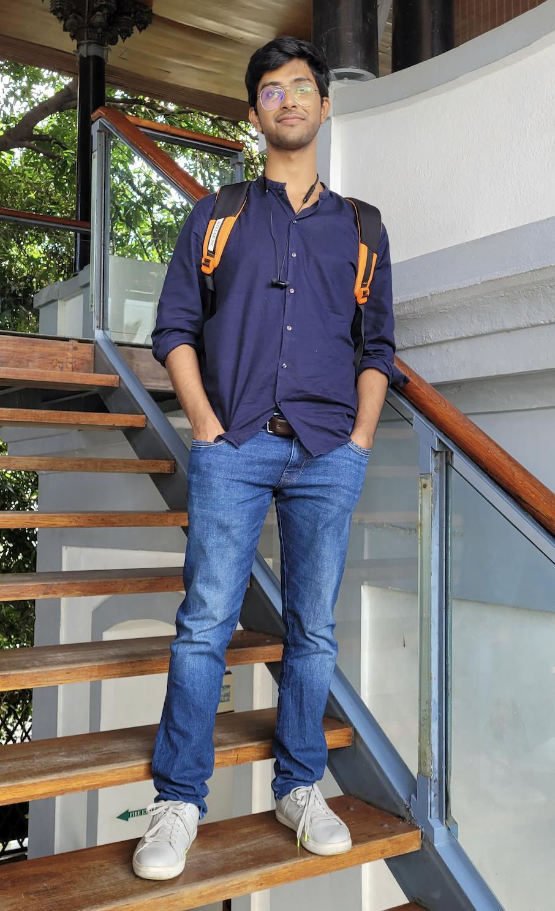

about me

Hi, I am Aditya Vats. I have been working on technical things in the last few years of my life. Since you are here, I want to run you through my short and unconventional (I think) career so far. It won't be a regurgitation of my resume. It is going to be something more. The aspirational aspects of these roles that I had assumed, something resumes or CVs don't capture. It is also my personal and experimental space, where I share some interesting experiments that I have been running.
Projects
what I've been up to
More soon
A space for the things I've been building, the experiments I've been running, and what I've learned along the way.
Work beyond work
hobbies (?)
More soon
A space for interests outside work, things I'm learning for the fun of it, and the occasional detour.